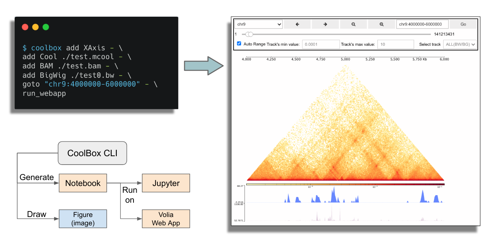
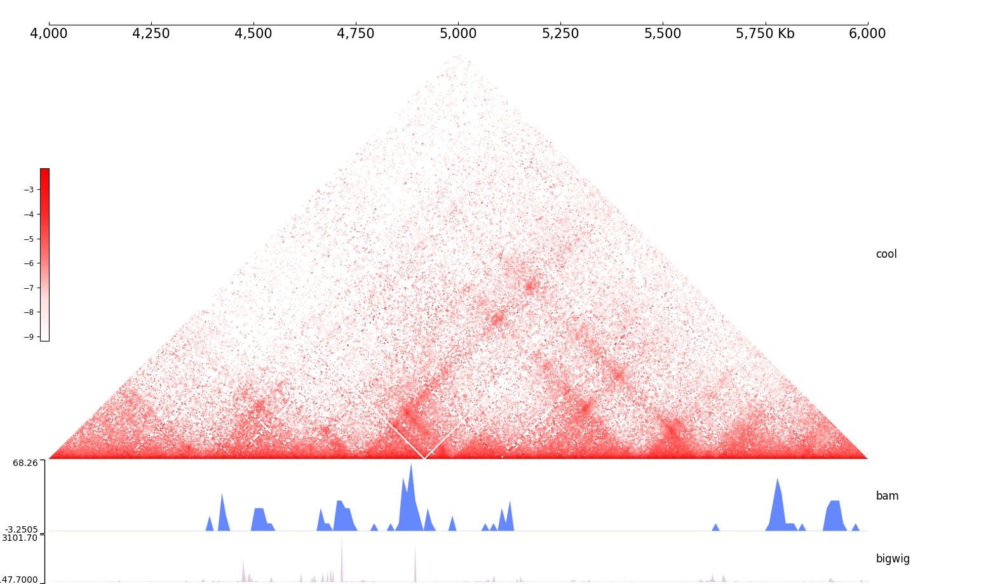
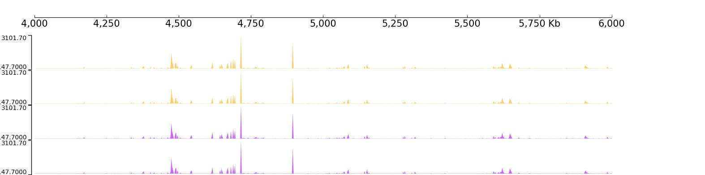
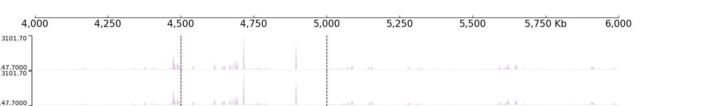
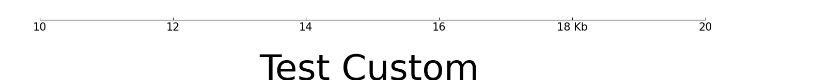

Quickstart (CLI)
This document is for teach the basic usage of CoolBox’s Command Line Interface.
Interactive online version: binder
CoolBox CLI is a chainable command tool which can compose complex frame as easily with very intuition syntax.

Check the basic information
Firstly, check the coolbox version:
[1]:
%%bash
coolbox version
0.4.0
CoolBox CLI is composed by many chainable sub-commands, we can print the help information to list them:
[2]:
%%bash
coolbox
NAME
coolbox - CoolBox Command Line Interface
SYNOPSIS
coolbox - GROUP | COMMAND | VALUE
DESCRIPTION
You can use this cli to create coolbox browser instance,
visualize your data directly in shell.
example:
1. Draw tracks within a genome range, save figure to a pdf file:
$ coolbox add XAxis - add BigWig test.bw - goto "chr1:5000000-6000000" - plot test.pdf
2. Generate a notebook and run jupyter to open browser:
$ coolbox add XAxis - add BigWig test.bw - goto "chr1:5000000-6000000" - run_jupyter
3. Run a independent web application.
$ coolbox add XAxis - add BigWig test.bw - goto "chr1:5000000-6000000" - run_webapp
GROUPS
GROUP is one of the following:
current_range
frames
COMMANDS
COMMAND is one of the following:
add
Add a Element(Track, Coverage, Feature), for example: coolbox add XAxis
end_with
End the with block
gen_notebook
Generate The notebook contain codes for run coolbox browser.
goto
Goto a genome range.
joint_view
Start a new frame positioned at the specified frame_pos in the final joint view. The center frame should be a single Cool, HicMat, DotHic track.
load_module
Import custom tracks from a module/package for example:
plot
Draw a figure within a genome range and save to file
print_source
Print the browser composing code.
run_jupyter
Create a notebook according to command line, then start a jupyter process.
run_webapp
Run a independent coolbox browser web app. (Create notebook and run voila)
set_genome
Set reference genome for browser object.
show_doc
Print the document of specified Element type. For example: coolbox show_doc Cool
source
start_with
Start a 'with' block, apply the element to all elements within the block.
version
print coolbox version
VALUES
VALUE is one of the following:
frame_pos
genome
Example Dataset
Here, we use a small testing dataset for convenient. This dataset contains files in differnet file formats, and they are in same genome range(chr9:4000000-6000000) of a reference genome (hg19).
[3]:
%%bash
echo Current working directory: $PWD
Current working directory: /mnt/c/Users/wzxu/Desktop/CoolBox/docs/source
[4]:
%%bash
ls -lh ../../tests/test_data
total 99M
-rwxrwxrwx 1 wzxu wzxu 787K Feb 26 2025 bam_chr9_4000000_6000000.bam
-rwxrwxrwx 1 wzxu wzxu 5.8K Nov 4 23:13 bam_chr9_4000000_6000000.bam.bai
-rwxrwxrwx 1 wzxu wzxu 1.5K Feb 26 2025 bed6_chr9_4000000_6000000.bed
-rwxrwxrwx 1 wzxu wzxu 449 Nov 4 23:10 bed6_chr9_4000000_6000000.bed.bgz
-rwxrwxrwx 1 wzxu wzxu 220 Nov 4 23:10 bed6_chr9_4000000_6000000.bed.bgz.tbi
-rwxrwxrwx 1 wzxu wzxu 2.3K Feb 26 2025 bed9_chr9_4000000_6000000.bed
-rwxrwxrwx 1 wzxu wzxu 8.6K Feb 26 2025 bed_chr9_4000000_6000000.bed
-rwxrwxrwx 1 wzxu wzxu 2.0K Nov 4 23:10 bed_chr9_4000000_6000000.bed.bgz
-rwxrwxrwx 1 wzxu wzxu 226 Nov 4 23:10 bed_chr9_4000000_6000000.bed.bgz.tbi
-rwxrwxrwx 1 wzxu wzxu 34K Feb 26 2025 bed_chr9_4000000_6000000_chromstates.bed
-rwxrwxrwx 1 wzxu wzxu 5.0K Nov 4 23:10 bed_chr9_4000000_6000000_chromstates.bed.bgz
-rwxrwxrwx 1 wzxu wzxu 399 Nov 4 23:10 bed_chr9_4000000_6000000_chromstates.bed.bgz.tbi
-rwxrwxrwx 1 wzxu wzxu 19K Feb 26 2025 bedgraph_chr9_4000000_6000000.bg
-rwxrwxrwx 1 wzxu wzxu 4.1K Nov 4 23:13 bedgraph_chr9_4000000_6000000.bg.bgz
-rwxrwxrwx 1 wzxu wzxu 4.5K Nov 4 23:13 bedgraph_chr9_4000000_6000000.bg.bgz.tbi
-rwxrwxrwx 1 wzxu wzxu 270 Feb 26 2025 bedpe_chr9_4000000_6000000.bedpe
-rwxrwxrwx 1 wzxu wzxu 149 Nov 4 23:09 bedpe_chr9_4000000_6000000.bedpe.bgz
-rwxrwxrwx 1 wzxu wzxu 158 Nov 9 19:55 bedpe_chr9_4000000_6000000.bedpe.bgz.px2
-rwxrwxrwx 1 wzxu wzxu 366 Feb 26 2025 bedpe_var_chr9_4000000_6000000.bedpe
-rwxrwxrwx 1 wzxu wzxu 165 Nov 4 23:23 bedpe_var_chr9_4000000_6000000.bedpe.bgz
-rwxrwxrwx 1 wzxu wzxu 173 Nov 9 19:53 bedpe_var_chr9_4000000_6000000.bedpe.bgz.px2
-rwxrwxrwx 1 wzxu wzxu 31K Feb 26 2025 bigwig_chr9_4000000_6000000.bw
-rwxrwxrwx 1 wzxu wzxu 158K Feb 26 2025 bigwig_chr9_4000000_6000000_K562_H3K27ac.bigwig
-rwxrwxrwx 1 wzxu wzxu 240K Feb 26 2025 bigwig_chr9_4000000_6000000_K562_H3K27me3.bigwig
-rwxrwxrwx 1 wzxu wzxu 452K Feb 26 2025 bigwig_chr9_4000000_6000000_K562_H3K4me3.bigwig
-rwxrwxrwx 1 wzxu wzxu 124K Feb 26 2025 bigwig_chr9_4000000_6000000_K562_RNA.bigwig
-rwxrwxrwx 1 wzxu wzxu 62K Feb 26 2025 chr9.1.pc.bedGraph
-rwxrwxrwx 1 wzxu wzxu 20K Nov 4 23:11 chr9.1.pc.bedGraph.bgz
-rwxrwxrwx 1 wzxu wzxu 3.5K Nov 4 23:11 chr9.1.pc.bedGraph.bgz.tbi
-rwxrwxrwx 1 wzxu wzxu 24M Feb 26 2025 cool_chr1_89000000_90400000_for_cmp_1.mcool
-rwxrwxrwx 1 wzxu wzxu 23M Feb 26 2025 cool_chr1_89000000_90400000_for_cmp_2.mcool
-rwxrwxrwx 1 wzxu wzxu 27M Feb 26 2025 cool_chr9_4000000_6000000.mcool
-rwxrwxrwx 1 wzxu wzxu 14M Feb 26 2025 dothic_chr9_4000000_6000000.hic
-rwxrwxrwx 1 wzxu wzxu 9.3M Feb 26 2025 down100.ctcf.pkl
-rwxrwxrwx 1 wzxu wzxu 537K Feb 26 2025 gtf_chr9_4000000_6000000.gtf
-rwxrwxrwx 1 wzxu wzxu 27K Nov 4 23:10 gtf_chr9_4000000_6000000.gtf.bgz
-rwxrwxrwx 1 wzxu wzxu 398 Nov 4 23:10 gtf_chr9_4000000_6000000.gtf.bgz.tbi
-rwxrwxrwx 1 wzxu wzxu 537K Feb 26 2025 gtf_chr9_4000000_6000000_fake.gtf
-rwxrwxrwx 1 wzxu wzxu 34K Feb 26 2025 hg19_ideogram.txt
-rwxrwxrwx 1 wzxu wzxu 6.7K Nov 9 19:37 hg19_ideogram.txt.bgz
-rwxrwxrwx 1 wzxu wzxu 8.5K Nov 9 19:37 hg19_ideogram.txt.bgz.tbi
-rwxrwxrwx 1 wzxu wzxu 2.1K Feb 26 2025 human.hg19.genome
-rwxrwxrwx 1 wzxu wzxu 3.1K Feb 26 2025 make_test_dataset.py
-rwxrwxrwx 1 wzxu wzxu 799 Feb 26 2025 pairs_chr9_4000000_6000000.pairs
-rwxrwxrwx 1 wzxu wzxu 292 Nov 4 23:09 pairs_chr9_4000000_6000000.pairs.bgz
-rwxrwxrwx 1 wzxu wzxu 257 Nov 9 19:55 pairs_chr9_4000000_6000000.pairs.bgz.px2
-rwxrwxrwx 1 wzxu wzxu 606 Feb 26 2025 peak_chr9_4000000_6000000.bedpe
-rwxrwxrwx 1 wzxu wzxu 211 Nov 4 23:11 peak_chr9_4000000_6000000.bedpe.bgz
-rwxrwxrwx 1 wzxu wzxu 222 Nov 9 19:54 peak_chr9_4000000_6000000.bedpe.bgz.px2
-rwxrwxrwx 1 wzxu wzxu 775K Feb 26 2025 snp_chr9_4000000_6000000.snp
-rwxrwxrwx 1 wzxu wzxu 448 Feb 26 2025 tad_chr9_4000000_6000000.bed
-rwxrwxrwx 1 wzxu wzxu 154 Nov 4 23:09 tad_chr9_4000000_6000000.bed.bgz
-rwxrwxrwx 1 wzxu wzxu 140 Nov 4 23:09 tad_chr9_4000000_6000000.bed.bgz.tbi
Compose Frame
CoolBox CLI is designed for compose Frame object by a command chain. The key command of the chain is the add sub-command, It just like the + operator in CoolBox API.
[5]:
%%bash
coolbox add -- --help
NAME
coolbox add - Add a Element(Track, Coverage, Feature), for example: coolbox add XAxis
SYNOPSIS
coolbox add ELEM_STR <flags> [ARGS]...
DESCRIPTION
Add a Element(Track, Coverage, Feature), for example: coolbox add XAxis
POSITIONAL ARGUMENTS
ELEM_STR
Element type string. Like BAM, BigWig, Cool ... Full list of Track types can be found here(https://gangcaolab.github.io/CoolBox/quick_start_API.html#Track-types).
ARGS
Positional args for create elements.
FLAGS
Flags are accepted.
Keyword args for create elements.
NOTES
You can also use flags syntax for POSITIONAL ARGUMENTS
Here, give a example of draw a figure using CoolBox CLI:
[6]:
%%bash
DIR=../../tests/test_data
coolbox add XAxis - \
add Cool $DIR/cool_chr9_4000000_6000000.mcool - \
add Title "cool" - \
add BAMCov $DIR/bam_chr9_4000000_6000000.bam - \
add Title "bam" - \
add BigWig $DIR/bigwig_chr9_4000000_6000000.bw - \
add Title "bigwig" - \
goto "chr9:4000000-6000000" - \
plot /tmp/test_coolbox.jpg
We have draw a figure and save it to /tmp/test_coolbox.jpg, let’s take a look:
[7]:
from IPython.display import Image
Image(filename='/tmp/test_coolbox.jpg')
[7]:

As we can see, we compose our data using the add command, then plot the figure.
The first argument of add is the coolbox element type name. The most frequently used element is the Track, all Track type can be found here
with block
For modify features or add coverage to a group of tracks, you can use the with block, it’s the equivalent of the `with statement in API <https://gangcaolab.github.io/CoolBox/quick_start_API.html#with-statement>`__.
For example modify track’s color:
[8]:
%%bash
DIR=../../tests/test_data
coolbox add XAxis - \
start_with Color "#ffcc66" - \
add BigWig $DIR/bigwig_chr9_4000000_6000000.bw - \
add BigWig $DIR/bigwig_chr9_4000000_6000000.bw - \
end_with - \
start_with Color "#cc66ff" - \
add BigWig $DIR/bigwig_chr9_4000000_6000000.bw - \
add BigWig $DIR/bigwig_chr9_4000000_6000000.bw - \
end_with - \
goto "chr9:4000000-6000000" - \
plot /tmp/test_coolbox.jpg
[9]:
from IPython.display import Image
Image(filename='/tmp/test_coolbox.jpg')
[9]:

Apply Vlines coverage:
[10]:
%%bash
DIR=../../tests/test_data
coolbox add XAxis - \
start_with Vlines "['chr9:4500000-4500000', 'chr9:5000000-5000000']" - \
add BigWig $DIR/bigwig_chr9_4000000_6000000.bw - \
add BigWig $DIR/bigwig_chr9_4000000_6000000.bw - \
end_with - \
goto "chr9:4000000-6000000" - \
plot /tmp/test_coolbox.jpg
[11]:
from IPython.display import Image
Image(filename='/tmp/test_coolbox.jpg')
[11]:

Start a browser
CoolBox CLI can automatically generate a notebook which contain the browser composition code equivalent to using CoolBox API.
And this notebook will be run in Jupyter environment or Volia webapp. Then you can open your web browser to use this GUI to explore your genomic data, for example:
$ coolbox add XAxis - \
add Cool ./tests/test_data/cool_chr9_4000000_6000000.mcool - \
add BAM ./tests/test_data/bam_chr9_4000000_6000000.bam - \
add BigWig ./tests/test_data/bigwig_chr9_4000000_6000000.bw - \
goto "chr9:4000000-6000000" - \
run_jupyter
This will start a jupyter server and run a coolbox browser within the notebook. And you can also to run a independent web app using similar command:
$ coolbox add XAxis - \
add Cool ./tests/test_data/cool_chr9_4000000_6000000.mcool - \
add BAM ./tests/test_data/bam_chr9_4000000_6000000.bam - \
add BigWig ./tests/test_data/bigwig_chr9_4000000_6000000.bw - \
goto "chr9:4000000-6000000" - \
run_webapp
More detail usage see the help info:
[12]:
%%bash
coolbox run_jupyter -- --help
NAME
coolbox run_jupyter - Create a notebook according to command line, then start a jupyter process.
SYNOPSIS
coolbox run_jupyter <flags>
DESCRIPTION
Create a notebook according to command line, then start a jupyter process.
FLAGS
-j, --jupyter_args=JUPYTER_ARGS
Default: '--ip=0.0.0.0'
Arguments for run jupyter.
[13]:
%%bash
coolbox run_webapp -- --help
NAME
coolbox run_webapp - Run a independent coolbox browser web app. (Create notebook and run voila)
SYNOPSIS
coolbox run_webapp <flags>
DESCRIPTION
Run a independent coolbox browser web app. (Create notebook and run voila)
FLAGS
-v, --voila_args=VOILA_ARGS
Default: '--Voila.ip=0.0.0.0'
Arguments for run jupyter.
Load custom module
We can load the custom defined module(.py file) with the load_module command. For example, there are a simple custom defined track in custom_track.py:
[14]:
%%bash
DIR=../../tests/
cat $DIR/custom_track.py
from coolbox.core.track.base import Track
class CustomTrack(Track):
def __init__(self):
super().__init__(properties_dict={})
def fetch_data(self, gr, **kwargs):
return "Test Custom"
def plot(self, ax, gr, **kwargs):
x = gr.start + gr.length * 0.33
ax.text(x, 0, self.fetch_data(gr), fontsize=50)
ax.set_xlim(gr.start, gr.end)
We can load it from the file with load_module then use it to draw a plot:
[15]:
%%bash
DIR=../../tests/
coolbox - load_module $DIR/custom_track.py - \
add XAxis - \
add CustomTrack - \
goto "chr1:10000-20000" - \
plot /tmp/test_coolbox_custom_cli.png
[16]:
Image(filename='/tmp/test_coolbox_custom_cli.png')
[16]:
